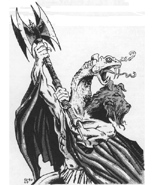

2118 • 2602
| Climate/Terrain: | The Abyss |
|---|---|
| Frequency: | Rare |
| Organization: | Solitary |
| Activity Cycle: | Any |
| Diet: | Carnivore |
| Intelligence: | High to exceptional (15-16) |
| Treasure: | Nil |
| Alignment: | Chaotic evil |
| No. Appearing: | 1 |
| Armor Class: | -5 |
| Movement: | 15 |
| Hit Dice: | 12 |
| THAC0: | 9 |
| No. of Attacks: | 3 |
| Damage/Attack: | 2d6/1d6/battle axe (2d10+5) |
| Special Attacks: | Vorpal and dancing battle axe, poison |
| Special Defenses: | Cold iron weapons to hit, never surprised |
| Magic Resistance: | 90% |
| Size: | H (12’ tall) |
| Morale: | Fearless (19-20) |
| XP Value: | 21,000 |
The only guardian tanar’ri, the molydeus enforces the war effort as a sort of political officer.
Molydei are powerful, muscular humanoids with dark red skin. They could be mistaken for giant red men, except for their two grotesque heads. One is a snarling dog’s head that misses nothing in front of it. The other, a long prehensile snake head, observes everything that happens behind it. These creatures carry ornate twin-bladed battleaxes.
Molydei have a form of ESP that lets them communicate with intelligent creatures and read the thoughts of others.
Combat: A molydeus is never surprised. It attacks fearlessly and seldom retreats. Its enchanted axe inflicts 2d10 damage per hit and is +5 to both attack and damage rolls. The axe has the powers of a vorpal weapon and a dancing sword.
Molydei also attack with both heads. The dog head inflicts 2d6 damage; the snake head does ld6 damage and injects a powerful venom (save vs. poison or transform into a manes in 1d6 turns). A neutralize poison spell followed by remove curse eliminates the poison. Once transformed, the victim is beyond restoration, short of divine intervention or a very carefully worded wish.
In addition to those available to all tanar’ri, a molydeus has the following spell-like abilities: affect normal fires, animate object, blindness, charm person or mammal, command, Evard’s black tentacles, fear, improved invisibility, know alignment, lightning bolt (7 times per day), polymorph other, sleep, suggestion, true seeing (always active), and vampiric touch. Molydei can also gate in 1 molydeus, 1-2 chasme, or 1-4 babau once per hour with a 35% chance of success.
Molydei are immune to damage by most normal or magical weapons. Only cold-wrought iron weapons and magical spells can affect these creatures.
When a molydeus dies, its axe disappears. The only way to get this powerful weapon is to take it from a living molydeus. A molydeus does not rest until it recovers its weapon, stalking the thief day and night without end until the axe is recovered and the thief horribly killed.
Habitat/Society: The molydei are the greatest enigma in the Abyss. These powerful police wander the layers of the Abyss and search for true tanar’ri that stray from the cause of the Blood War. They report directly to the balors, but even balors are not above reproach, and the molydei would turn against one that strays.
Ecology: By enforcing the loyalty of the true tanar’ri, the molydei play an important role in the Blood War. These creatures exist only to serve the cause. They have no loyalty towards any tanar’ri and will try to destroy any of them at the slightest sign of infidelity. They do not enforce their doctrine on nontrue tanar’ri, for they assume that these are all disloyal by nature, and that only constant threats and punishments keep them in line.
◆ 1790 ◆